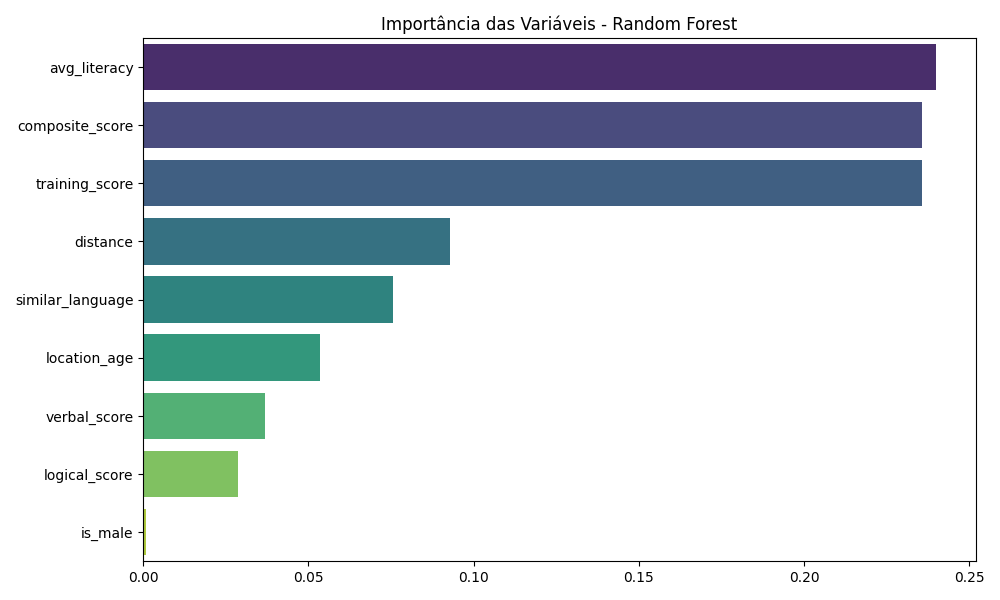

Análise de Turnover na TECHCO: Identificando Fatores de Permanência
Visão Geral do Projeto
Este projeto tem como objetivo principal analisar os fatores que influenciam o turnover (rotatividade de funcionários) em uma empresa de tecnologia fictícia, a TECHCO. Utilizando um dataset simulado, a análise explora as características dos colaboradores e seu desempenho para identificar padrões que possam prever a saída de funcionários e, consequentemente, auxiliar na formulação de estratégias de retenção eficazes.
Apesar de o dataset apresentar um desbalanceamento significativo na variável alvo (com o turnover sendo um evento raro), o projeto demonstra o processo completo de um pipeline de Machine Learning, desde a extração e tratamento dos dados até a modelagem preditiva e a interpretação dos resultados, com foco nos desafios de dados reais.
1. Extração e Tratamento de Dados (ETL)
O projeto iniciou-se com o carregamento de um arquivo CSV contendo registros temporais de desempenho e características individuais de funcionários da TECHCO. Um passo crucial foi a remoção de registros duplicados por `emp_id` ao longo do tempo, garantindo que apenas o primeiro registro único de cada funcionário fosse considerado para a análise de turnover.
Foram criadas novas features para enriquecer o dataset:
- `composite_score`: Uma média simples entre `training_score`, `logical_score` e `verbal_score`, servindo como um indicador geral de performance cognitiva e técnica.
- `turnover_flag`: Codificação binária da variável `turnover` (0 para "Stayed" - permaneceu, e 1 para "Left" - saiu).
2. Pré-processamento e Normalização
Para preparar os dados para a modelagem, as variáveis numéricas selecionadas foram transformadas com `StandardScaler`. Este passo é essencial para padronizar as escalas das features e evitar que variáveis com valores maiores dominem o processo de aprendizado do modelo.
As features incluídas no processo de modelagem foram: * Scores de treinamento, raciocínio lógico e verbal. * Indicadores socioeconômicos (`avg_literacy`, `location_age`, `similar_language`). * Dados de deslocamento (`distance`). * Gênero (`is_male`). * Score composto (`composite_score`).
3. Análise Exploratória Avançada
📊 Análise de Componentes Principais (PCA)
A Análise de Componentes Principais (PCA) foi utilizada para reduzir a dimensionalidade dos dados, mantendo a máxima variância. Embora não apresente um gráfico aqui, a análise revelou uma clara separação entre os funcionários que permaneceram e os que saíram. Este achado inicial sugeriu que fatores como pontuação de desempenho e características relacionadas à localização e contexto do funcionário poderiam influenciar significativamente a permanência.
🌐 Projeção via t-SNE
Para uma exploração mais aprofundada de agrupamentos em baixa dimensionalidade, aplicou-se a técnica não linear t-SNE (t-Distributed Stochastic Neighbor Embedding). Essa projeção reforçou que, apesar da raridade do turnover, alguns perfis de funcionários mostram uma maior propensão a deixar a empresa, indicando a existência de subgrupos que merecem atenção específica.
4. Modelagem Preditiva com Random Forest
Um modelo de classificação `Random Forest` foi treinado com 80% dos dados e testado com os 20% restantes. A escolha do Random Forest se deu pela sua robustez e capacidade de lidar com dados complexos.
Resultados de Performance do Modelo: O modelo demonstrou uma acurácia geral de predição extremamente alta (~99,5%). : 1] No entanto, é crucial notar que essa alta acurácia é um reflexo do forte desbalanceamento de classes no dataset, onde a vasta maioria dos funcionários pertencia à classe "Stayed" (permaneceram). : 1]

Como esperado em casos de classes muito desbalanceadas:
- Classe "Stayed": O modelo alcançou precisão e recall perfeitos (1.00 para ambas), indicando sua excelência em identificar funcionários que permanecerão na empresa. : 1]
- Classe "Left": O modelo não conseguiu prever corretamente nenhum exemplo de funcionários que saíram (`recall` de 0.00 para a classe '1'), o que é uma limitação direta do número extremamente baixo de ocorrências dessa classe (apenas 1 'support') nos dados originais. : 1] Este resultado enfatiza a necessidade de técnicas de balanceamento de classes (como SMOTE) em um cenário de dados reais para melhorar a detecção de eventos raros.
5. Importância das Variáveis
A análise da importância das variáveis é fundamental para entender quais fatores mais influenciam a decisão de turnover, independentemente da capacidade preditiva do modelo para a classe minoritária.
Gráfico 1: Importância das Variáveis no Modelo Random Forest para Previsão de Turnover.
As variáveis mais relevantes para o modelo foram:
- `avg_literacy`: Alta importância, superando até mesmo o `composite_score`.
- `composite_score`: Alta importância.
- `training_score`: Alta importância, reforçando a relevância do desempenho em treinamentos.
- `distance`: Média importância.
- `similar_language`: Média importância, sugerindo que a afinidade linguística com a localidade pode influenciar a permanência.
- `location_age`: Baixa importância.
- `verbal_score`: Baixa importância.
- `logical_score`: Baixa importância.
- `is_male`: Praticamente sem importância no modelo.
Insight Chave: A literacia média (avg_literacy), a performance técnica/cognitiva geral (composite_score e training_score), e fatores como distância de deslocamento e afinidade linguística com a localidade parecem ser os principais fatores associados à permanência dos colaboradores na TECHCO.
Principais Insights e Recomendações 💡
- Raridade do Turnover: A natureza extremamente rara do turnover nos dados analisados impôs um desafio significativo à modelagem preditiva tradicional. Em cenários reais, isso exigiria a aplicação de técnicas avançadas de balanceamento de classes (como SMOTE, ADASYN) para melhorar a detecção de eventos minoritários.
- Performance e Retenção: A alta correlação entre a performance técnica/cognitiva (medida pelos scores) e a permanência dos funcionários sugere que programas de capacitação contínua e desenvolvimento de habilidades podem influenciar positivamente a retenção de talentos. Investir no aprimoramento técnico dos colaboradores pode ser uma estratégia eficaz para reduzir o turnover.
- Fatores Geográficos e Culturais: A relação entre distância de deslocamento e afinidade cultural (idioma) com a saída de funcionários indica a importância de considerar o bem-estar e a adaptação cultural dos colaboradores no ambiente de trabalho. A empresa pode explorar soluções como modelos de trabalho flexíveis ou iniciativas de integração cultural para mitigar esses riscos.
- Equidade de Gênero: O fato de o gênero não ter tido um impacto significativo na decisão de turnover, segundo o modelo treinado, é um ponto positivo sob a perspectiva de equidade dentro da TECHCO.